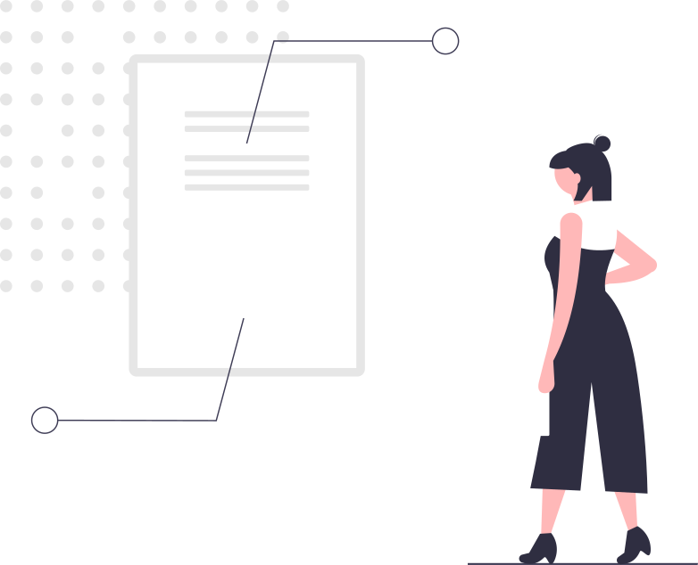

Presentación - IV Edición
Qué es?
La rehabilitación vestibular es una de las modalidades terapéuticas más importantes para el manejo de pacientes con mareos, vértigo e inestabilidad aguda y crónica. Consiste en un conjunto de técnicas y maniobras físicas basadas en evidencia científica, para recuperar el normal funcionamiento del aparato del equilibrio dañado.
En qué se basa?
El curso sigue las directivas de la Guía Internacional para la Educación en Terapia de Rehabilitación Vestibular de la Sociedad Barany y apunta a formar especialistas en la evaluación, diagnóstico kinésico y rehabilitación de las alteraciones del sistema vestibular y aparato del equilibrio.
Por qué la necesidad de la formación profesional?
Los mareos y la pérdida del equilibrio son dos de las causas más frecuentes de consulta médica y kinesiológica. Debido a sus orígenes multifactoriales, el diagnóstico y manejo del paciente con mareos no siempre es sencillo. En las últimas décadas los avances en relación a la comprensión, evaluación y tratamiento de los trastornos vestibulares han llevado a la necesidad de requerir especialistas en el área.
Para quién?
Destinado a: Kinesiólogos, Fisioterapeutas, Lic. en Kinesiología y Fisioterapia, Audiólogos, Fonoaudiólogos, Orl.

"Hay que buscar el buen equilibrio en el movimiento y no en la quietud." - Bruce Lee